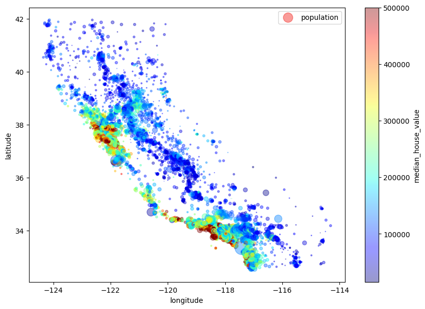
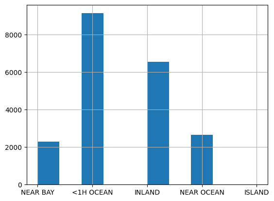
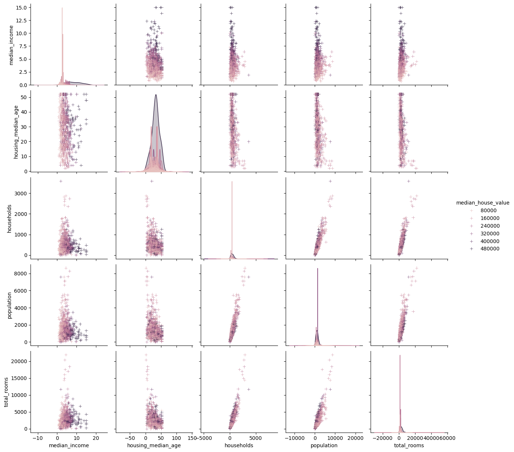
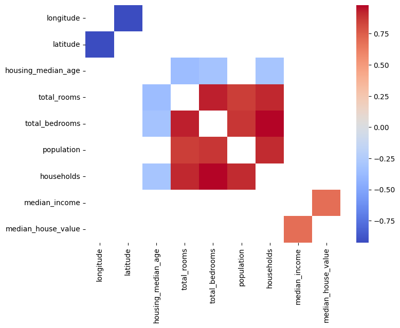

2.1.4
Understanding data types
“It is imperative to know the attribute properties to carry out meaningful operations and research with them”
Why is data type important?

image
Encoding the date 2022-01-01T00:01 into a signed integer \(2201010001\)
However, a signed integer is a 32-bit datum that represents an integer in the range:
\([-2^{31}, 2^{31}-1] = [-2147483648, 2147483647]\)
\(2201010001 > 2147483647\)
What are the implications of a data type?
Pandas automatically infers data types, or they can be specified during creation - Common data types are numeric ones - np.floatN represents floating numbers (e.g., -3.14) - np.intN/np.uintN represent integers with/without sign (-42 and 42) - N is the number of needed bits: 8, 16, 32 o 64 - Other data types - bool: Boolean values - datetime64, timedelta64: timestamp and time intervals - object: mainly used for strings
| ID | PriceBin | Date | Quantity | Review | |
|---|---|---|---|---|---|
| 0 | Cola | low | 05/07/2021 | 10.0 | 2 |
| 1 | Bread | medium | 05/07/2021 | 25.0 | 1 |
| 2 | Beer | high | 06/07/2021 | 100.0 | 3 |
| 3 | Diaper | high | 06/07/2021 | NaN | 4 |
| 4 | Pizza | medium | 06/07/2021 | 25.0 | 5 |
The attribute type determines which operator can be applied to the attribute - Equality, sort, sum, ratio, etc. - It makes sense to compute the average Quantity but not the average ID
Different attribute types
- (Categorical) Nominal: can distinguish the values (i.e., check equality)
- (Categorical) Ordinal: can distinguish and sort the values
- (Numeric) Interval: can distinguish and sort the values, and compute their difference
- (Numeric) Ratio: can distinguish and sort the values, and compute their difference and ratio
| 0 | |
|---|---|
| ID | object |
| PriceBin | object |
| Date | object |
| Quantity | float64 |
| Review | int64 |
Likert scale:
[*, **, ***, ****, *****][1, 2, 3, 4, 5]
What about averaging?
Converting responses to a Likert-type question into an average seems an obvious and intuitive step, but it doesn't necessarily constitute good methodology. One important point is that respondents are often reluctant to express a strong opinion and may distort the results by gravitating to the neutral midpoint response. It also assumes that the emotional distance between mild agreement or disagreement and strong agreement or disagreement is the same, which isn't necessarily the case. At its most fundamental level, the problem is that the numbers in a Likert scale are not numbers as such, but a means of ranking responses.The Likert scale is widely used in social work research, and is commonly constructed with four to seven points. It is usually treated as an interval scale, but strictly speaking it is an ordinal scale, where arithmetic operations cannot be conducted [1]
[1] Wu, Huiping, and Shing-On Leung. “Can Likert scales be treated as interval scales?—A simulation study.” Journal of social service research 43.4 (2017): 527-532.
<class 'pandas.core.frame.DataFrame'>
RangeIndex: 5 entries, 0 to 4
Data columns (total 5 columns):
# Column Non-Null Count Dtype
--- ------ -------------- -----
0 ID 5 non-null object
1 PriceBin 5 non-null object
2 Date 5 non-null object
3 Quantity 4 non-null float64
4 Review 5 non-null int64
dtypes: float64(1), int64(1), object(3)
memory usage: 328.0+ bytes| ID | PriceBin | Date | Quantity | Review | |
|---|---|---|---|---|---|
| count | 5 | 5 | 5 | 4.000000 | 5.000000 |
| unique | 5 | 3 | 2 | NaN | NaN |
| top | Cola | medium | 06/07/2021 | NaN | NaN |
| freq | 1 | 2 | 3 | NaN | NaN |
| mean | NaN | NaN | NaN | 40.000000 | 3.000000 |
| std | NaN | NaN | NaN | 40.620192 | 1.581139 |
| min | NaN | NaN | NaN | 10.000000 | 1.000000 |
| 25% | NaN | NaN | NaN | 21.250000 | 2.000000 |
| 50% | NaN | NaN | NaN | 25.000000 | 3.000000 |
| 75% | NaN | NaN | NaN | 43.750000 | 4.000000 |
| max | NaN | NaN | NaN | 100.000000 | 5.000000 |
| ID | PriceBin | Date | Quantity | Review | |
|---|---|---|---|---|---|
| 2 | Beer | high | 06/07/2021 | 100.0 | 3 |
| 1 | Bread | medium | 05/07/2021 | 25.0 | 1 |
| 4 | Pizza | medium | 06/07/2021 | 25.0 | 5 |
| 0 | Cola | low | 05/07/2021 | 10.0 | 2 |
| 3 | Diaper | high | 06/07/2021 | NaN | 4 |
The California Housing case study
Check also:
- https://www.kaggle.com/camnugent/california-housing-prices
- https://www.oreilly.com/library/view/hands-on-machine-learning/9781492032632/
We will use the California Housing Prices dataset. Our task is to use California census data to forecast housing prices given the population, median income, and median housing price for each block group in California. Block groups are the smallest geographical unit for which the US Census Bureau publishes sample data (a block group typically has a population of 600 to 3,000 people). We will just call them “districts” for short.
| longitude | latitude | housing_median_age | total_rooms | total_bedrooms | population | households | median_income | median_house_value | ocean_proximity | |
|---|---|---|---|---|---|---|---|---|---|---|
| 0 | -122.23 | 37.88 | 41.0 | 880.0 | 129.0 | 322.0 | 126.0 | 8.3252 | 452600.0 | NEAR BAY |
| 1 | -122.22 | 37.86 | 21.0 | 7099.0 | 1106.0 | 2401.0 | 1138.0 | 8.3014 | 358500.0 | NEAR BAY |
| 2 | -122.24 | 37.85 | 52.0 | 1467.0 | 190.0 | 496.0 | 177.0 | 7.2574 | 352100.0 | NEAR BAY |
| 3 | -122.25 | 37.85 | 52.0 | 1274.0 | 235.0 | 558.0 | 219.0 | 5.6431 | 341300.0 | NEAR BAY |
| 4 | -122.25 | 37.85 | 52.0 | 1627.0 | 280.0 | 565.0 | 259.0 | 3.8462 | 342200.0 | NEAR BAY |
| ... | ... | ... | ... | ... | ... | ... | ... | ... | ... | ... |
| 20635 | -121.09 | 39.48 | 25.0 | 1665.0 | 374.0 | 845.0 | 330.0 | 1.5603 | 78100.0 | INLAND |
| 20636 | -121.21 | 39.49 | 18.0 | 697.0 | 150.0 | 356.0 | 114.0 | 2.5568 | 77100.0 | INLAND |
| 20637 | -121.22 | 39.43 | 17.0 | 2254.0 | 485.0 | 1007.0 | 433.0 | 1.7000 | 92300.0 | INLAND |
| 20638 | -121.32 | 39.43 | 18.0 | 1860.0 | 409.0 | 741.0 | 349.0 | 1.8672 | 84700.0 | INLAND |
| 20639 | -121.24 | 39.37 | 16.0 | 2785.0 | 616.0 | 1387.0 | 530.0 | 2.3886 | 89400.0 | INLAND |
20640 rows × 10 columns
… and now?
Answer some questions:
- Which attributes (i.e., columns) are contained in the dataset?
- Which is their semantics?
Index(['longitude', 'latitude', 'housing_median_age', 'total_rooms',
'total_bedrooms', 'population', 'households', 'median_income',
'median_house_value', 'ocean_proximity'],
dtype='object')Dataset description
longitude: A measure of how far west a house is; a higher value is farther westlatitude: A measure of how far north a house is; a higher value is farther northhousingMedianAge: Median age of a house within a block; a lower number is a newer buildingtotalRooms: Total number of rooms within a blocktotalBedrooms: Total number of bedrooms within a blockpopulation: Total number of people residing within a blockhouseholds: Total number of households, a group of people residing within a home unit, for a blockmedianIncome: Median income for households within a block of houses (measured in tens of thousands of US Dollars)medianHouseValue: Median house value for households within a block (measured in US Dollars)oceanProximity: Location of the house w.r.t ocean/sea
<class 'pandas.core.frame.DataFrame'>
RangeIndex: 20640 entries, 0 to 20639
Data columns (total 10 columns):
# Column Non-Null Count Dtype
--- ------ -------------- -----
0 longitude 20640 non-null float64
1 latitude 20640 non-null float64
2 housing_median_age 20640 non-null float64
3 total_rooms 20640 non-null float64
4 total_bedrooms 20433 non-null float64
5 population 20640 non-null float64
6 households 20640 non-null float64
7 median_income 20640 non-null float64
8 median_house_value 20640 non-null float64
9 ocean_proximity 20640 non-null object
dtypes: float64(9), object(1)
memory usage: 1.6+ MB| longitude | latitude | housing_median_age | total_rooms | total_bedrooms | population | households | median_income | median_house_value | ocean_proximity | |
|---|---|---|---|---|---|---|---|---|---|---|
| count | 20640.000000 | 20640.000000 | 20640.000000 | 20640.000000 | 20433.000000 | 20640.000000 | 20640.000000 | 20640.000000 | 20640.000000 | 20640 |
| unique | NaN | NaN | NaN | NaN | NaN | NaN | NaN | NaN | NaN | 5 |
| top | NaN | NaN | NaN | NaN | NaN | NaN | NaN | NaN | NaN | <1H OCEAN |
| freq | NaN | NaN | NaN | NaN | NaN | NaN | NaN | NaN | NaN | 9136 |
| mean | -119.569704 | 35.631861 | 28.639486 | 2635.763081 | 537.870553 | 1425.476744 | 499.539680 | 3.870671 | 206855.816909 | NaN |
| std | 2.003532 | 2.135952 | 12.585558 | 2181.615252 | 421.385070 | 1132.462122 | 382.329753 | 1.899822 | 115395.615874 | NaN |
| min | -124.350000 | 32.540000 | 1.000000 | 2.000000 | 1.000000 | 3.000000 | 1.000000 | 0.499900 | 14999.000000 | NaN |
| 25% | -121.800000 | 33.930000 | 18.000000 | 1447.750000 | 296.000000 | 787.000000 | 280.000000 | 2.563400 | 119600.000000 | NaN |
| 50% | -118.490000 | 34.260000 | 29.000000 | 2127.000000 | 435.000000 | 1166.000000 | 409.000000 | 3.534800 | 179700.000000 | NaN |
| 75% | -118.010000 | 37.710000 | 37.000000 | 3148.000000 | 647.000000 | 1725.000000 | 605.000000 | 4.743250 | 264725.000000 | NaN |
| max | -114.310000 | 41.950000 | 52.000000 | 39320.000000 | 6445.000000 | 35682.000000 | 6082.000000 | 15.000100 | 500001.000000 | NaN |
… are you satisfied with the understanding?
… what about data visualization?
Can we exploit the nature of the data?

What if we integrate open data?
Can we exploit the nature of the data… again?

Memory usage
What if I change float64 to float32?
<class 'pandas.core.frame.DataFrame'>
RangeIndex: 20640 entries, 0 to 20639
Data columns (total 10 columns):
# Column Non-Null Count Dtype
--- ------ -------------- -----
0 longitude 20640 non-null float32
1 latitude 20640 non-null float32
2 housing_median_age 20640 non-null float32
3 total_rooms 20640 non-null float32
4 total_bedrooms 20433 non-null float32
5 population 20640 non-null float32
6 households 20640 non-null float32
7 median_income 20640 non-null float32
8 median_house_value 20640 non-null float32
9 ocean_proximity 20640 non-null object
dtypes: float32(9), object(1)
memory usage: 887.0+ KBMissing values
There are some missing values for total_bedrooms. What should we do?
Most Machine Learning algorithms cannot work with missing features. We have three options: - Get rid of the corresponding districts (i.e., drop the rows) - df.dropna(subset=["total_bedrooms"]) - Get rid of the whole attribute (i.e., drop the columns) - df.drop("total_bedrooms", axis=1) - Set the values to some value (zero, the mean, the median, etc.) - df["total_bedrooms"].fillna(df["total_bedrooms"].median())
Non-numeric attributes
ocean_proximity is a text attribute so we cannot compute its median. Some options: - Get rid of the whole attribute. (df.drop("ocean_proximity", axis=1) - Change from categorical to ordinal (e.g., NEAR BAY = 0, INLAND = 1) - Can foresee any problem in this? - ML algorithms will assume that two nearby values are more similar than two distant values. This may be fine in some cases (e.g., for ordered categories such as “bad”, “average”, “good”, “excellent”), but it is obviously not the case for the ocean_proximity column (for example, categories 0 and 4 are clearly more similar than categories 0 and 1). - Change from categorical to one hot encoding - To fix this issue, a common solution is to create one binary attribute per category: one attribute equal to 1 when the category is “<1H OCEAN” (and 0 otherwise), another attribute equal to 1 when the category is “INLAND” (and 0 otherwise), and so on. This is called one-hot encoding, because only one attribute will be equal to 1 (hot), while the others will be 0 (cold). The new attributes are sometimes called dummy attributes
| count | |
|---|---|
| ocean_proximity | |
| <1H OCEAN | 9136 |
| INLAND | 6551 |
| NEAR OCEAN | 2658 |
| NEAR BAY | 2290 |
| ISLAND | 5 |

Visualization

Open questions:
median_incomeshould be in dollars. However, it has a strange range. Why? “you are told that the data has been scaled and capped at 15 (actually 15.0001) for higher median incomes, and at 0.5 (actually 0.4999) for lower median incomes. The numbers represent roughly tens of thousands of dollars. The numbers represent roughly tens of thousands of dollars”housing_median_ageandmedian_house_valueare capped. As tomedian_house_value, this is a serious problem since it is your target attribute (your labels). Your Machine Learning algorithms may learn that prices never go beyond that limit. You need to check with your client team (the team that will use your system’s output) to see if this is a problem or not. If they tell you that they need precise predictions even beyond 500,000USD, then you have mainly two options: (a) collect proper labels for the districts whose labels were capped, (b) remove those districts from the training set.”- These attributes have very different scales. Should we scale them?
- Many histograms are tail heavy: they extend much farther to the right of the median than to the left. This may make it a bit harder for some Machine Learning algorithms to detect patterns
Relationships between variables
- A grid of Axes such that each numeric variable in data will by shared across the y-axes across a single row and the x-axes across a single column
- The diagonal plots are treated differently: a univariate distribution plot is drawn to show the marginal distribution of the data in each column.

Check correlations and intervals
| longitude | latitude | housing_median_age | total_rooms | total_bedrooms | population | households | median_income | median_house_value | |
|---|---|---|---|---|---|---|---|---|---|
| longitude | 1.0*** | -0.92*** | -0.11*** | 0.04*** | 0.07*** | 0.1*** | 0.06*** | -0.02** | -0.05*** |
| latitude | -0.92*** | 1.0*** | 0.01 | -0.04*** | -0.07*** | -0.11*** | -0.07*** | -0.08*** | -0.14*** |
| housing_median_age | -0.11*** | 0.01 | 1.0*** | -0.36*** | -0.32*** | -0.3*** | -0.3*** | -0.12*** | 0.11*** |
| total_rooms | 0.04*** | -0.04*** | -0.36*** | 1.0*** | 0.93*** | 0.86*** | 0.92*** | 0.2*** | 0.13*** |
| total_bedrooms | 0.07*** | -0.07*** | -0.32*** | 0.93*** | 1.0*** | 0.88*** | 0.98*** | -0.01 | 0.05*** |
| population | 0.1*** | -0.11*** | -0.3*** | 0.86*** | 0.88*** | 1.0*** | 0.91*** | 0.0 | -0.02*** |
| households | 0.06*** | -0.07*** | -0.3*** | 0.92*** | 0.98*** | 0.91*** | 1.0*** | 0.01* | 0.07*** |
| median_income | -0.02** | -0.08*** | -0.12*** | 0.2*** | -0.01 | 0.0 | 0.01* | 1.0*** | 0.69*** |
| median_house_value | -0.05*** | -0.14*** | 0.11*** | 0.13*** | 0.05*** | -0.02*** | 0.07*** | 0.69*** | 1.0*** |
